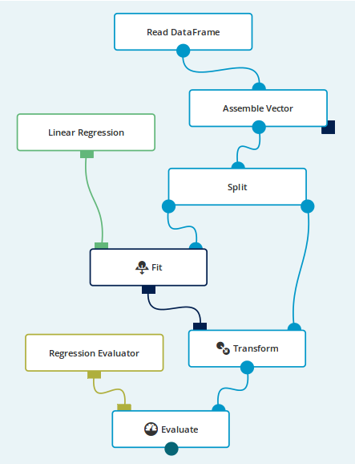
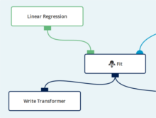
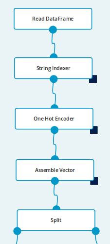
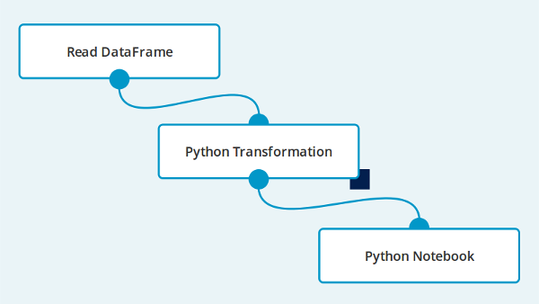
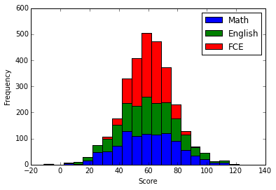
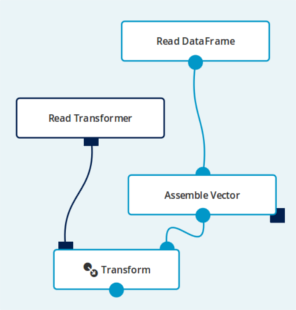

This set of basic examples will introduce you to some of the fundamental Analytical Engine features.
The goal of this exercise is to build a model predicting apartment prices based on 3 features: beds, baths and sq_ft.
The dataset transactions.csv has 5 columns and 1,000 rows (header row and 999 data rows). Each row provides information about the apartment: city, number of bedrooms, number of bathrooms, size of the apartment (in square feet) and its price.
city,beds,baths,sq_ft,price
CityB,4,1,1294,529377
CityC,4,2,1418,574485
CityC,2,1,600,221661
...
To build the model we will split our initial dataset into two parts - training and validation sets. We will train a linear regression model using training set. The model will be scored (against the validation part of the dataset) and report of the scoring will be produced (model performance report).
machinelearning1 in the Name section - setting a meaningful name will help
when looking for a workflow in the workflow list.Read DataFrame operation - the panel on the right now shows its parameters.transactions.csv.
Once the operation gets executed, the dataset will be downloaded from a web address. The Simple Regression Model
Read DataFrame.
Select an Assemble Vector operation.INPUT COLUMNS parameter.city and price to the list - we have to exclude the city
column, because it does not contain numeric values and price, because it contains
the actual results.features in the OUTPUT COLUMN parameter - the operation will add a column
with this name to the dataset.Assemble Vector. Select a Split operation.0.7 in the SPLIT RATIO parameter - we will use 30% of the data for
training and 70% for evaluation.0 in the SEED parameter - the split operation itself is not deterministic.
You can put any value here - it will split the dataset differently, but in the same proportions.FEATURES COLUMN parameter.features in the text field - this will use
the column created in step 3.PREDICTION COLUMN section put prediction - this new column will contain
predicted values.LABEL COLUMN parameter.price in the text field - price
column contains the actual values that we will evaluate our model against.Drag an edge from the output port of the Linear Regression and select a Fit operation.
This operation will be used to fit model to the training set.
Drag an edge from the output port of the Fit and select a Transform operation.
It will transform the dataset using the model fitted in the previous step.
prediction in the PREDICTION COLUMN parameter.price in the LABEL COLUMN parameter.Regression Evaluator and select
an Evaluate operation.Transform with the input port of the Evaluate.Evaluate node.
This will mark the node to be executed. All required predecessor nodes will be executed as well.Click on the report icon under the Evaluate node. Report panel with evaluation metric
will be shown at the bottom of the screen. This metric is showing our model’s performance.
In the next example we will try to improve it.

Model training might take a lot of time. It is possible to export trained
models for further reuse with Write Transformer operation.
An exported model can also be shared with other users.
Write Transformer operation./resources/data/model_example_1.Fit output to the Write Transformer operation.The goal of this exercise is to improve our previous model’s performance. In the previous example we only used 3 features of the apartments: beds, baths and sq_ft. We will now add the city feature to the model.
In our dataset city is a text column, and Linear Regression algorithm only works on numerical columns. A quick glance on the city column’s values suggests that it might be a categorical column - a column containing only a small, fixed set of different values. We will process this feature before executing linear regression algorithm on the data.
 The Updated Workflow
Open workflow from Example 1.
Assemble Vector node from the Read DataFrame node:
Assemble Vector node and drag it
anywhere on the empty space of the canvas.Read DataFrame and select
a String Indexer operation.
city_index, with numbers representing
text values from the original column.one column in OPERATE ON selector.city in the INPUT COLUMN.append new column in OUTPUT selector.city_index in the OUTPUT COLUMN.String Indexer and select
an One Hot Encoder operation.
one column in OPERATE ON selector.city_index in the INPUT COLUMN.append new column in OUTPUT selector.city_encoded in the OUTPUT COLUMN.One Hot Encoder with the input port of the Assemble Vector.Assemble Vector node and add city_index to excluded columns:
city_index to the list - we only want to add city_encoded
column to the features.0 or 1 for each possible value of the city
column.Evaluate node.Click on the report icon under the Evaluate node. As you can see the model performance is much
better than in the previous example.
The goal of this exercise is to show how to use an embedded Python Notebook to interactively analyze data.
 Analyze the Data Using a Python Notebook
notebook1 in the Name section.Read DataFrame parameters, pick the grades_2.0.csv data source.Read DataFrame and select
a Python Transformation operation.CODE parameter, in order to extract the FCE value
from Certificates column to a separate column:import json
from pyspark.sql.types import *
def transform(dataframe):
def get_fce(js):
return float(json.loads(js)['Cambridge']['FCE'])
sqlContext.registerFunction(
"get_fce", get_fce, FloatType())
sqlContext.registerDataFrameAsTable(dataframe, "df")
return sqlContext.sql(
"SELECT Math, English, get_fce(Certificates) as FCE FROM df")This snippet of code uses a user-defined SQL function that
utilizes Python’s json library in order to parse our Certificates column.
Python Transformation
and select a Python Notebook.Python Notebook node.The Spark Context is available in the Python Notebook as a global variable sc.
| In: |
|
| Out: | [1, 4, 9, 16, 25] |
SQLContext can be accessed as a global variable sqlContext.
| In: |
|
||||||||||||
| Out: |
|
You can access the DataFrame passed to the Python Notebook node on the first input port by calling the
dataframe() function.
| In: |
|
||||||||||||||||||||||||
| Out: |
|
You can use Matplotlib inside notebook cells to generate plots and visualize your data.
| In: |
|
| Out: |
<matplotlib.text.Text at 0x7f05649ab390>  |
The goal of this exercise is to import and use a previously trained and
exported model. Note that the Export model step from Example 1 must be finished prior to this example.

Read Transformer operation./resources/data/model_example_1.
This path refers to the model saved in the Example 1.Read DataFrame operation and set parameters as explained in Example 1.
Note that in a real life scenario new data would be used.Assemble Vector operation and set parameters as explained in Example 1.Hint: if the data preprocessing is built of many operations it might be a
good idea to encapsulate these operations inside a Custom Transformer
operation and export it as well. Importing and using this Custom Transformer
allows user to reuse preprocessing logic.
Read Transformer and select a Transform operation.Assemble Vector output with the Transform operation input.To make sure that your imported model is working correctly you can view the data report to check the generated predictions.